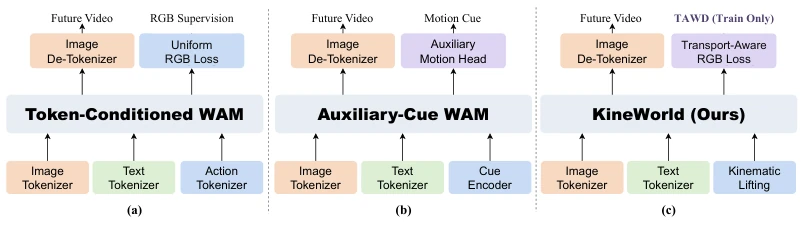
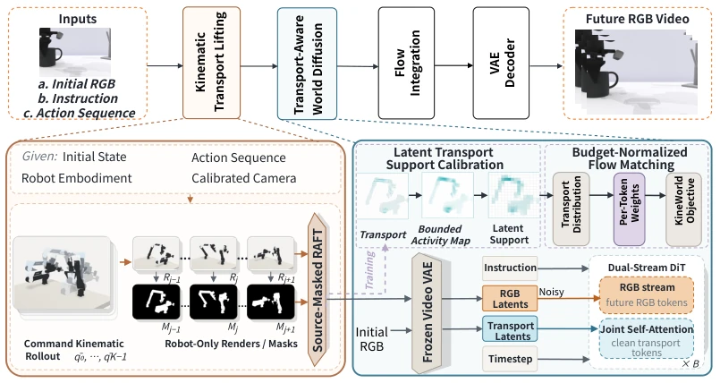
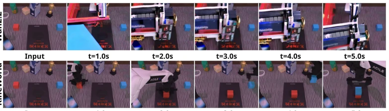

KineWorld delivers a "precision strike" to embodied world models. Existing models mostly treat the frame as a whole, with action regions occupying only a small portion; uniform loss functions make it unimportant where the robot moves. This paper does not construct a new architecture but adopts "loss redistribution". Using kinematically derived Transport Fields to tell the model: do not guess the background blindly, focus on learning where the robotic arm moved. KTL is responsible for converting motion information into clean latent conditions, while TAWD is responsible for tilting weights to action response regions during training. The results are indeed good, the EWM score reached 68.95, significantly better than Wan2.2. But there are drawbacks: it relies on perfect camera and robot calibration; if calibration is misaligned, the transport fields become invalid. Moreover, it does not directly model object motion, only focusing on the robot body, which may be insufficient for complex interactions. Overall, this is a clever "parameter tuning" technique that turns kinematic priors from conditions into supervision signals, worth borrowing, but do not expect it to solve all physics simulation problems.
研究动机Motivation
具身世界模型（WAMs）的核心痛点在于“动作响应”与“视觉生成”的错位。现有工作如 Zhu et al. (2024) 和 Guo et al. (2025) 虽然引入了动作 token 或光流作为条件，但 RGB 生成的监督目标通常是均匀加权的。当动作引发的视觉变化仅占据画面极小部分时，均匀平均会稀释关键区域的误差信号，导致模型倾向于拟合静态背景而非动态交互。Chen et al. (2026b) 尝试了光流分支重加权，但并未直接改变主 RGB 目标的空间权重。本文指出，动作条件（指定生成什么）和监督分配（决定哪里更重要）应分开处理。机器人运动学提供了几何先验，能预测动作在相机视场中的位置，无需依赖生成帧。因此，利用运动学传输场（Kinematic Transport）来指导未来 RGB 的监督分配，是提升交互关键区域预测精度的关键。
The core pain point of Embodied World Models (WAMs) lies in the misalignment between "action response" and "visual generation". Existing works such as Zhu et al. (2024) and Guo et al. (2025) introduce action tokens or optical flow as conditions, but the RGB generation supervision targets are usually uniformly weighted. When visual changes triggered by actions occupy only a very small part of the frame, uniform averaging dilutes the error signals in key regions, causing the model to tend to fit static backgrounds rather than dynamic interactions. Chen et al. (2026b) attempted optical flow branch reweighting, but did not directly change the spatial weights of the main RGB target. This paper points out that action conditions (specifying what to generate) and supervision allocation (deciding where is more important) should be handled separately. Robot kinematics provide geometric priors that can predict the position of actions in the camera field of view without relying on generated frames. Therefore, utilizing Kinematic Transport fields to guide the supervision allocation for future RGB is key to improving prediction accuracy in interaction-critical regions.

Figure 1: (a) Token-conditioned WAMs use numerical trajectories or learned action embeddings for video generation (Zhu et al., 2024; Guo et al., 2025; Liao et al., 2025), but typically apply uniform RGB supervision, potentially underemphasizing interaction-critical local changes. (b) Auxiliary- cue WAMs incorporate motion-focused auxiliary cues, such as masks (Chen et al., 2026c), action images (Zhen et al., 2026), optical flow (Chen et al., 2026b), or projected kinematic fields (Yang et al., 2026), to improve motion localization. These cues alone do not directly change the spatial weighting of the primary RGB objective, potentially leaving motion localization and supervi- sion priorities misaligned. (c) KineWorld introduces action-guided RGB supervision by lifting camera-aligned kinematic
The KineWorld framework includes two core modules: Kinematic Transport Lift (KTL) and Transport-Aware World Diffusion (TAWD). The overall process is based on a latent video model, taking initial RGB, instructions, and action sequences as input. The KTL module first uses a fixed renderer to generate robot body RGB and masks, estimates displacement fields between consecutive frames via RAFT, and constructs camera-aligned transport fields. This transport field is encoded as clean latent conditions (without diffusion noise), injected into the generator as structural constraints to ensure spatial alignment of action response regions. The TAWD module focuses on loss optimization during the training phase. It calibrates the size of the transport field to the video latent grid, generating a normalized token weight distribution. By mixing uniform distribution and transport-focused distribution, TAWD redistributes a fixed proportion of supervision weights to action response regions while keeping the total weight constant. Specifically, define a non-negative transport intensity parameter beta, construct per-token weights; when beta=0, uniform flow matching is restored. This weight branch is used only during training, adding no extra overhead during inference, achieving action-consequence-oriented supervised learning.

Figure 2: Overview of KineWorld. Kinematic Transport Lifting (KTL) converts the commanded robot rollout into camera-aligned transport and injects its latent representation as a clean structural condition. Transport-Aware World Diffusion (TAWD) calibrates the transport support and derives mean-one token weights for the flow-matching objective, emphasizing action-responsive regions under a fixed weight budget. The weighting branch is used only during training, while the inherited action expert remains unchanged.
Experiments are based on ALOHA–AgileX two-finger manipulation data from RoboTwin 2.0. In single-view evaluation, KineWorld achieved EWMScore-P 68.95, outperforming Wan2.2 (49.21) and FlowWAM (63.87). Multi-view TWB-Score is 54.82, with the highest physical consistency score. Ablation studies show that KTL alone significantly improves physical and trajectory accuracy; adding TAWD further enhances interaction quality and motion quality. Parameters increased by only 1.19M, inference speed maintained at 3.02 FPS. Compared to baselines such as BWM and WoVR Plus, KineWorld performs outstandingly in physical and temporal consistency. However, TAWD's improvement on visual quality is not obvious, and it relies on calibration data. Overall, it proves the effectiveness of kinematic priors in supervision allocation, but still has limitations in complex object interactions.

Figure 3: Retained qualitative comparison between Wan2.2 and KineWorld. Decoded episode- 550 frames at t = 1.0, 2.0, 3.0, 4.0, and 5.0 s from 24-fps videos. This is a descriptive rollout comparison, not an action- or checkpoint-matched ablation.